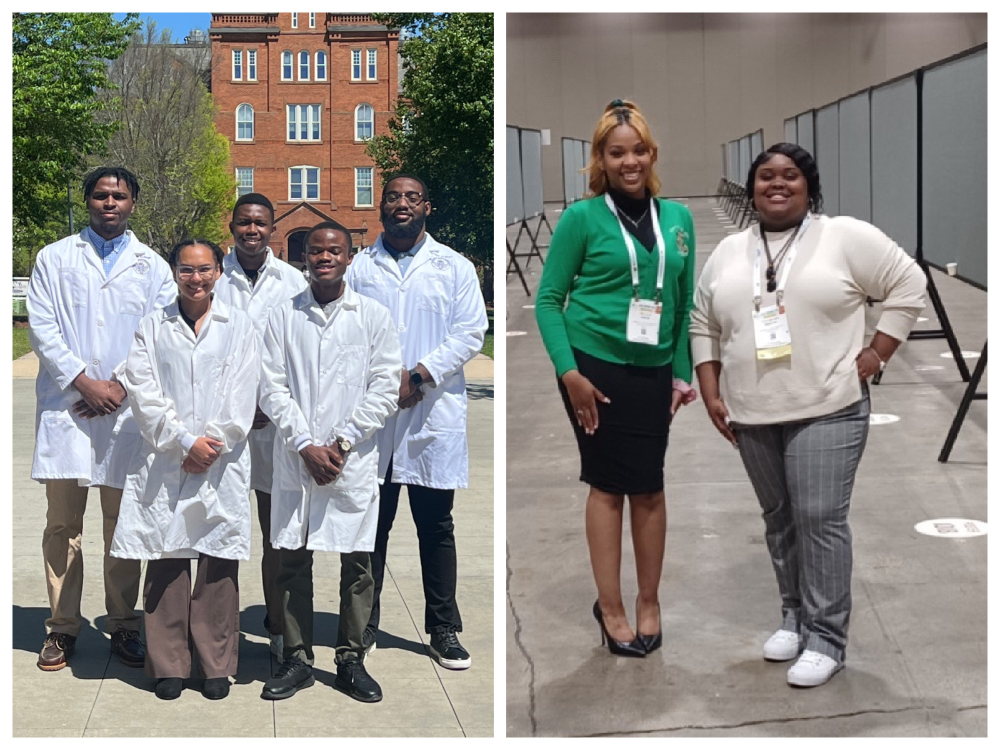

NOBCChE
Leaving behind a legacy
(l-r) Saeed Dupree, Tanaka Mbavarira, Joshua Beatty, Delaney Hill, John Josiah,
Heavyn Smith, and Tay-Keara Bristol
We are proud to announce the first National Organization of Professional Advancement of Black Chemists and Chemical Engineers (NOBCChE) chapter here at Johnson C. Smith University (JCSU). The establishment of this chapter with this renowned organization represents a historic step toward fostering an era of excellence in science while representing an important milestone in the university's commitment to elevating underrepresented groups in STEM. The founding members, Mr. Saeed Dupree (President- Biology and Chemistry, ’24), Ms. Delaney Hill (Vice-President - Biology,’23), Mr. John Josiah (Secretary -Biology, ’24), Mr. Joshua Beatty (Treasurer - Biology, ’24), Ms. Tay-Keara Bristol (Student Engagement - Biology,’24), Mr.Tanaka Mbavarira (Charter Member - Computer Engineering,’24) and Ms. Heavyn Smith (Charter Member – Biology, ’25) begin the application process last semester and they received confirmation that their application was approved on April 4th. “I am just so proud of them for being trailblazers for the College of STEM!” expressed Dr. Tracy Brown – Fox – (Principal Investigator and Research Mentor). For several members, establishing this chapter will be their legacy as they get ready to move onto other frontiers in their careers. Several of the founding members have represented JCSU at the White House and have traveled this country presenting their research at several conferences, including the 50th NOBCChE conference where they participated in the celebration of 50 years of NOBCChE building an “eminent cadre of scientists of color.” Each founding member would agree that they have achieved so much as a student at JCSU. Thus, graduated and graduating members are so happy to be already giving back to the university through the establishment of this NOBCChE chapter. Furthermore, NOBCChE membership is open to all students in the College of STEM. Thus, if you are interested, please contact Dr. Brown-Fox at tbrown2@jcsu.edu about joining NOBCChE and becoming an active member of this chapter. Being a Cato Par Excellence recipient has allowed her to pay for first-year membership, for up to 15 students. Also, all founding members are members of the Minority–Polymer Undergraduate Research Experiences Program (M-PURE) under the leadership of PI Dr. Tracy Brown-Fox, and their research is supported by NSF Award: #2101209. Please visit www.jcsumpure.com to find out more information about the program and our students. >